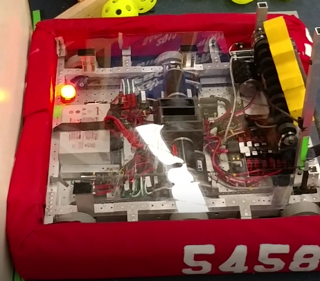
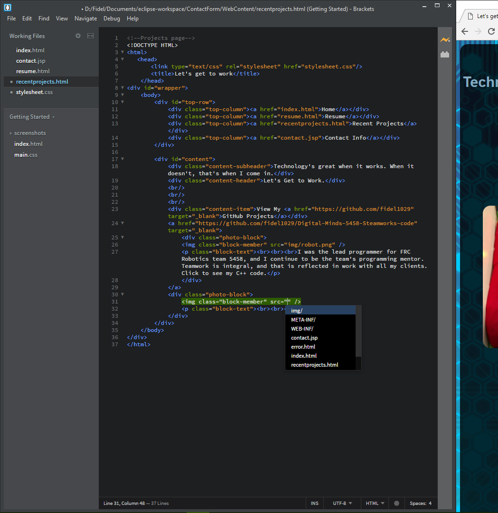
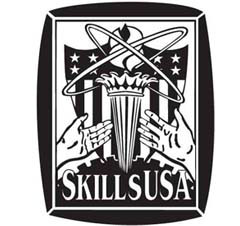
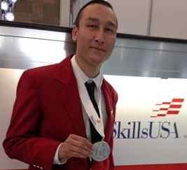
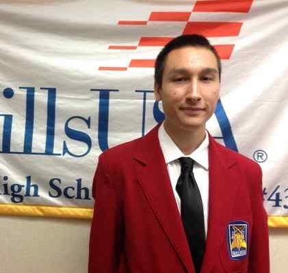
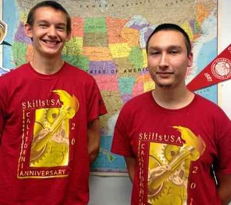

Technology's great when it works. When it doesn't, that's when I come in.
Let's Get to Work.
View My GitHub Projects

I was the lead programmer for FRC Robotics team 5458, and I continue to be the team's programming mentor. Teamwork is integral, and that is reflected in work with all my clients. Click to see my C++ code.

This website was coded 100% by yours truly. It contains an HTML/CSS frontend and Java backend. The entire website took approximately 10 hours.

I participated in SkillsUSA during 2015-2017. I competed in the Information Technology Services competition, reaching the national level in 2016 and 2017, placing 4th and second, respectively.
Press:

Castro takes silver at SkillsUSA in Kentucky; First medal for Pioneer at national level

Pioneer student earns 4th in national contest

Castro headed back to SkillsUSA national competition